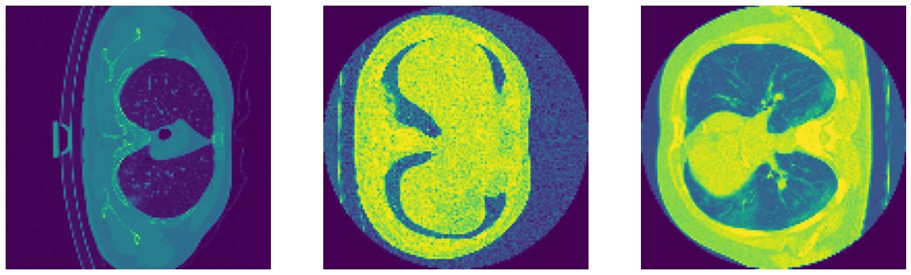
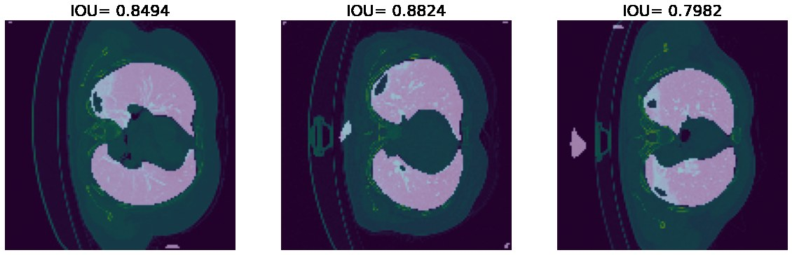
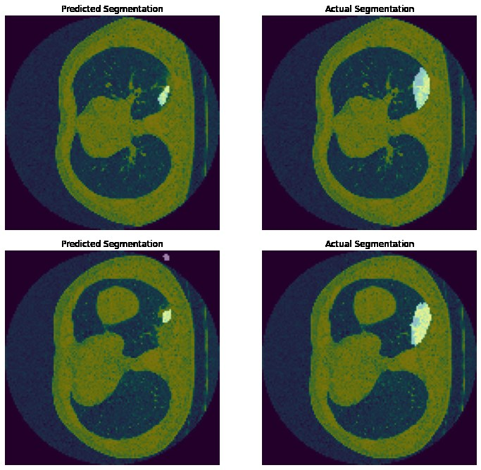

Automatic Disease Diagnosis and Localization of Abnormalities from CT Scans
In the summer of 2020, in the middle of the COVID-19 pandemic, I trained three fully convolutional networks (UNet, UNet++, and UNet++ with deep supervision) to outline the lungs and COVID-19 infections in chest CT scans. The best run of each reached about 87% IoU on held-out slices.
Why
CT scans are one of the most informative tools for diagnosing everything from fractures to tumors, but reading them is slow, and subtle contrast differences are easy to miss. For COVID-19, chest CTs show characteristic patterns such as ground-glass opacities, crazy-paving, and consolidation, and how much of the lung they cover says a lot about how severe the disease is. That ratio is hard to estimate by eye from a stack of 2D slices.
A segmentation model can propose the infected regions so that a radiologist only has to accept or correct them. Once the regions are confirmed, quantities like the infected fraction of the lung come for free.
Data
I combined two public datasets (MedSeg and COVID-19 CT scans on Kaggle) with CT volumes of 29 COVID-19 patients, each annotated with lung and infection masks. The scans came from different scanners and in different shapes and orientations, so most of the work went into preprocessing:
- slicing each 3D volume into 2D images,
- dropping slices that do not contain any lung,
- aligning all images to the same orientation, and
- resizing everything to a common resolution.
This left 2,126 slices, split 80/20 into training and validation. I also trained every model a second time with augmentation (zoom, rotation, and shear), which grew the training set by 2.5 to 3.5 times.

Models
- UNet: the classic encoder-decoder, where skip connections pass encoder features at each depth directly to the decoder.
- UNet++: replaces the plain skip connections with nested, densely connected convolution blocks, shrinking the semantic gap between encoder and decoder features.
- UNet++ with deep supervision: adds an output to every block on the top row, so the network acts like an ensemble of four nested UNets of different depths. It is trained with a combined binary cross-entropy and Dice loss.
All models were trained with Adam for up to 150 epochs, with early stopping.
Results
| Validation IoU | UNet | UNet++ | Deep Supervision |
|---|---|---|---|
| Without augmentation | 87.31% | 87.22% | 87.25% |
| With augmentation | 85.64% | 86.73% | 87.34% |
The three architectures ended up within a fraction of a percent of each other. Augmentation actually hurt the plain UNet, while the deep-supervision model was the only one that improved with it and gave the best overall score.

Infections are much smaller and fuzzier targets than lungs. The model usually finds the lesion, but in these examples it tends to underestimate its extent.

What I would do next
- Use 3D convolutions, or sequence models such as LSTMs across slices, instead of treating each slice independently.
- Add a classifier that decides whether a scan shows COVID-19 at all.
- Apply the same pipeline to other findings such as fractures or vessel ruptures.